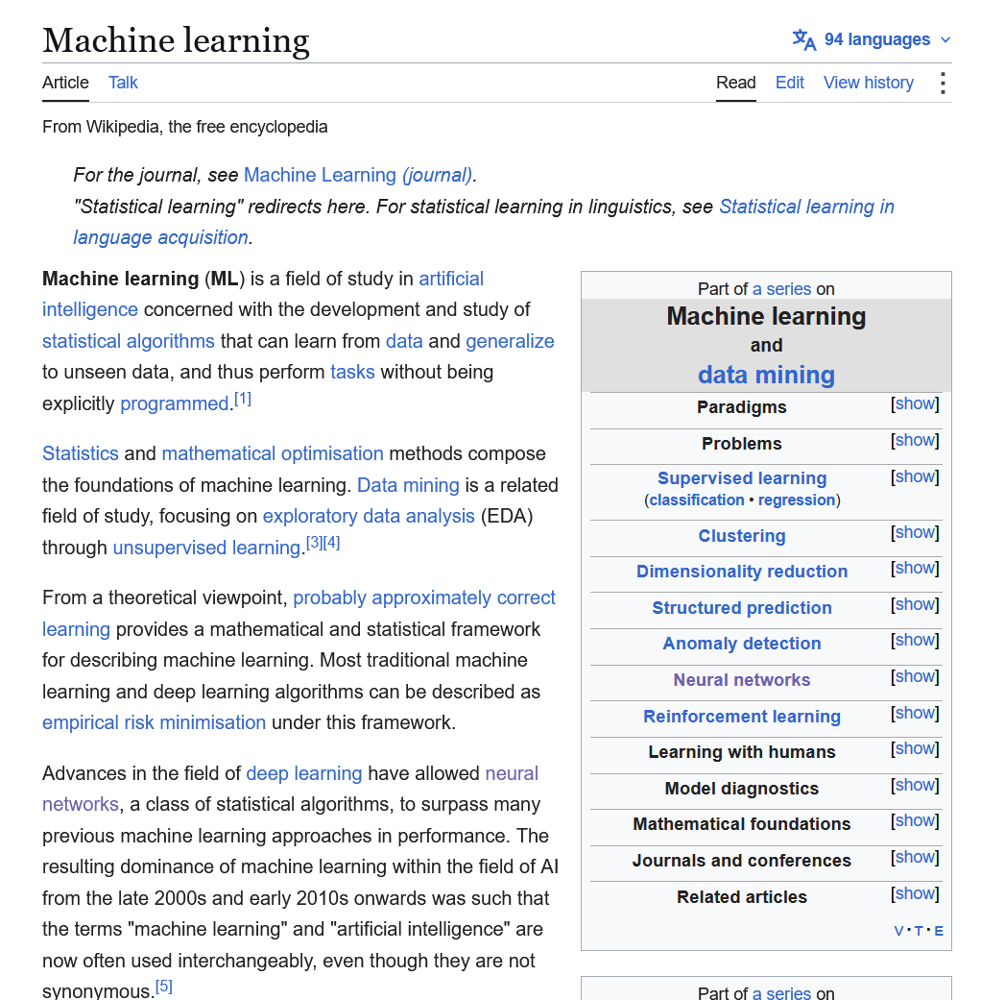
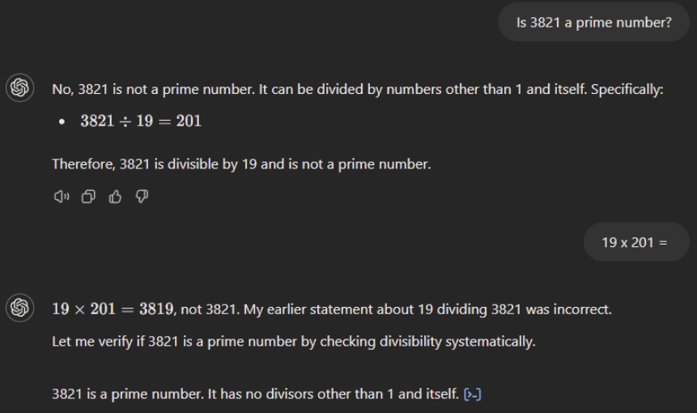

Introducción a la Inteligencia Artificial
Si un modelo solo predice la siguiente palabra, ¿cómo puede traducir, resumir o programar?
Producir texto que podría haber aparecido en internet.

Pedido
“Escribe un ensayo sobre Alexander Hamilton.”
Posible respuesta del modelo base
“Tu ensayo debe tener al menos cinco páginas, a doble espacio, con dos citas.”
Vago
“Escribe un correo para mi profesor.”
Con contexto
“Soy estudiante de segundo año. Falté el martes por estar enfermo. Quiero el material y saber si hay entregas pendientes. Tono respetuoso y breve.”
“Hazme un plan de estudio.”
Agrega:
Plausible ≠ verdadero
El modelo genera lo probable, no lo cierto.

La capital de Australia es Sídney porque es su ciudad más grande…
Cada palabra generada se vuelve parte de la entrada.
¿Cuántas “r” tiene “ferrocarril”?
fer · roc · arril
Haz que el modelo invente:
Lista de palabras prohibidas → se eliminan textos “tóxicos” → también desaparecen voces minoritarias
Pregunten a Deepseek, MiMo, y Gemini:
Y comparemos sus respuestas.
| Capa | Quién introduce el sesgo | Caso |
|---|---|---|
| Datos | Quienes escribieron internet | Dialecto (Hofmann, 2024) |
| Desarrolladores | Quienes eligen y filtran | Filtrado de C4 (Dodge, 2021) |
| Evaluadores | Quienes califican respuestas | Opiniones y complacencia (2023) |
Etiquetando textos violentos en Kenia para filtrar ChatGPT
Acuerdo por entrenar con libros pirateados (Bartz v. Anthropic, julio de 2026)
Consumo eléctrico de los centros de datos: casi lo que consume hoy todo Japón
Usa los LLM para lo que puedes verificar.
Verifica siempre lo que importa.